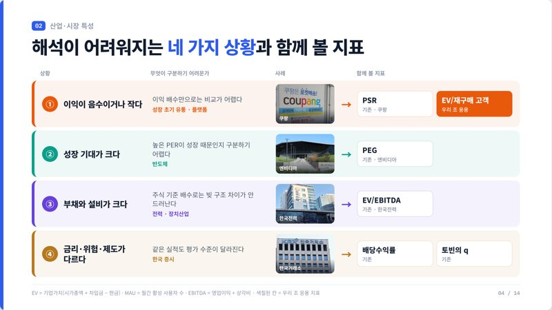
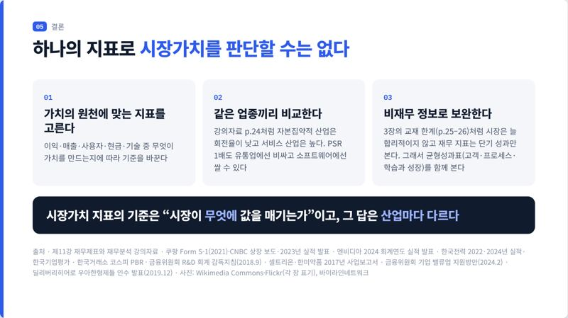

토의 4 · 제11강 재무제표와 재무분석
0:200:00 시작EPS·PER·PBR 너머, 시장은 기업을 무엇으로 평가하는가

안녕하세요. 토의문제 4번을 발표할 4조 고채현, 박민준입니다.
과제는 시장 여건과 산업 특성을 고려해, EPS[이피에스], PER[피이알], PBR[피비알]이 아닌 시장가치 지표를 개발하고 그 의미를 토론하는 것입니다. 저희는 상황에 맞는 기존 지표를 정리하고, 그중 하나를 응용해 계산해 봤습니다.
토의문제 4번 · 제11강 재무제표와 재무분석 · 4조 고채현, 박민준
읽는 법: 대본의 [파란 글씨]는 소리 내어 읽는 법입니다. 지표 이름의 “/”는 소리 내지 않고 이어 읽습니다(예: EV/EBITDA → 이브이 에비타). 처음 나올 때 뜻을 붙이고, 계산을 설명할 때만 “A를 B로 나눈 값”이라고 말합니다.
| 표기 | 읽기 | 뜻 | 계산 |
|---|---|---|---|
| EV/재구매 고객 | 이브이 재구매 고객 | 재구매 고객 한 명당 기업가치 | 기업가치를 재구매 고객 수로 나눈 값 |
| EV/MAU | 이브이 엠에이유 | 사용자 한 명당 기업가치 | 기업가치를 MAU로 나눈 값 |
| EV/EBITDA | 이브이 에비타 | 기업가치가 EBITDA의 몇 배인지 | 기업가치를 EBITDA로 나눈 값 |
| EV | 이브이 | 기업가치 | 시가총액 + 이자부 차입금 − 현금 |
| MAU | 엠에이유 | 월간 활성 사용자 수 | |
| EBITDA | 에비타 | 이자·세금·상각비 차감 전 이익 | |
| EPS | 이피에스 | 주당순이익 | |
| PER | 피이알 | 주가수익비율 | |
| PBR | 피비알 | 주가순자산비율 | |
| PSR | 피에스알 | 주가매출액비율 | |
| PEG | 페그 | 주가이익성장비율 | |
| 토빈의 q | 토빈의 큐 | 기업 전체 시장가치 ÷ 자산 대체원가 | |
| Form 20-F | 폼 투엔티 에프 | 미국 증권거래위원회에 내는 외국 기업 연차보고서 | |
| R&D | 알앤디 | 연구개발 |
안녕하세요. 토의문제 4번을 발표할 4조 고채현, 박민준입니다.
과제는 시장 여건과 산업 특성을 고려해, EPS[이피에스], PER[피이알], PBR[피비알]이 아닌 시장가치 지표를 개발하고 그 의미를 토론하는 것입니다. 저희는 상황에 맞는 기존 지표를 정리하고, 그중 하나를 응용해 계산해 봤습니다.

핵심은 한 문장입니다. 시장이 기업에 값을 매기는 기준은 산업과 시장 상황에 따라 다릅니다.
순서는 세 지표의 한계, 상황별 지표와 저희가 응용한 지표, 그리고 토론입니다.

먼저 교재의 세 지표입니다. EPS[이피에스], 주당순이익은 해당 기간의 이익을 주식 한 주 기준으로 나타낸 값입니다. 정확히는 보통주주에게 돌아가는 순이익을 가중평균 유통보통주식 수로 나눕니다. PBR[피비알]의 순자산은 자산에서 부채를 뺀 주주 몫입니다.
그런데 쿠팡처럼 적자인 회사는 PER[피이알]이 음수라 일반적인 비교가 어렵습니다. 엔비디아처럼 PER이 66배면, 그 이유가 성장 기대인지 PER만으로는 알기 어렵습니다.
⏎ 엔터 강의자료 25쪽도 시장가치 지표는 시장과 투자자가 효율적이고 합리적이라는 가정이 필요하다고 설명합니다.
⏎ 엔터 26쪽은 이런 지표가 단기적인 재무성과를 강조한다는 지적을 소개합니다. 그래서 상황에 맞는 지표를 함께 봐야 합니다.

판단이 어려운 상황을 네 가지로 나눴습니다. 먼저 EV[이브이], 기업가치입니다. 시가총액에 이자부 차입금을 더하고 현금을 뺀 값입니다. 주식가치에 순차입금을 더해 영업사업의 가치를 살펴보는 간단한 지표이고, 이 발표에서는 이 단순화한 산식을 씁니다.
⏎ 엔터 첫째, 이익이 없거나 작은 회사입니다. 매출로 보는 PSR[피에스알], 그리고 저희가 응용한 EV/재구매 고객[이브이 재구매 고객]을 봅니다.
⏎ 엔터 둘째, 성장 기대가 큰 회사입니다. PER[피이알]을 성장률과 함께 보는 PEG[페그]를 씁니다.
⏎ 엔터 셋째, 차입금과 설비가 큰 회사입니다. 주가만으로는 차입 규모를 알기 어려워서, 기업가치를 EBITDA[에비타]와 비교하는 EV/EBITDA[이브이 에비타]를 씁니다. EBITDA는 영업이익에 상각비를 더한 이익 지표로, 9장에서 설명하겠습니다.
⏎ 엔터 넷째, 기업의 특성에 더해 시장 상황도 고려해야 합니다. 금리나 위험 인식에 따라 같은 실적도 평가가 달라지기 때문에, 배당수익률과 토빈의 q[토빈의 큐]를 보조로 봅니다.

PSR[피에스알], 주가매출액비율은 시가총액을 매출액으로 나눈 값입니다. 순이익이 적자여도 매출이 양수라면 계산할 수 있습니다.
⏎ 엔터 쿠팡은 2021년 3월 뉴욕증권거래소에 상장했습니다. 첫날 시가총액은 약 845억 달러, 2020년 매출은 약 119.7억 달러였고 순손실이었습니다. 적자로 인해 일반적인 PER[피이알] 비교는 어렵지만, 매출을 기준으로 한 PSR은 계산할 수 있습니다. 845를 119.7로 나누면 약 7.06, 반올림해 7.1배입니다.
다만 이 값은 상장 당시 가격을 매출과 비교한 것이고, 그 가격이 적정했다는 뜻은 아닙니다.

플랫폼은 사용자 수로도 평가합니다. MAU[엠에이유], 월간 활성 사용자 수는 기업이 정한 활동 기준에 따른 한 달 사용자 수입니다. 기업가치를 이 수로 나눈 값이 EV/MAU[이브이 엠에이유], 사용자 한 명당 기업가치입니다.
⏎ 엔터 2019년 12월 딜리버리히어로는 우아한형제들 인수를 발표하면서 기업가치 40억 달러, 월간 사용자 800만 명 이상이라고 밝혔습니다. 단순히 나누면 사용자 한 명당 약 500달러 이하라는 참고값이 나옵니다. 다만 기업가치는 회사 전체 기준이고 MAU의 범위와 시점은 확인되지 않아서, 참고값으로만 봐야 합니다. 거래 가격에는 성장 전망도 반영됐습니다.
또 MAU에는 주문하지 않은 사용자도 들어갈 수 있고, 중복 계정 제거 여부는 집계 기준에 따라 다릅니다. 그래서 저희는 분모를 응용해 봤습니다.

저희 조가 응용한 지표, EV/재구매 고객[이브이 재구매 고객]입니다. 고객 한 명당 기업가치를 보는 방식은 원래 있고, 저희는 분모를 바꿨습니다. 배달 플랫폼에서는 반복 주문이 매출의 지속성에 중요하므로, 단순 접속자 수에 더해 실제 재구매 고객을 살펴봤습니다.
재구매 고객은 기준일 직전 12개월 동안, 취소나 전액 환불을 뺀 완료 주문이 두 번 이상인 고객입니다. 이 기준은 설명을 위한 가정이고, 앞으로 계속 주문한다는 보장은 아닙니다. 실제로는 여러 계정을 한 사람으로 완벽히 묶기 어렵지만, 이 가상 예시에서는 중복이 제거됐다고 가정합니다.
⏎ 엔터 가상의 배달앱 A[에이]와 B[비]는 기업가치 2조 원, MAU[엠에이유] 1,000만 명으로 같습니다. 사용자 한 명당 기업가치는 둘 다 20만 원입니다. 그런데 재구매 고객이 A는 600만 명, B는 300만 명이면, 재구매 고객 한 명당 기업가치는 A가 약 33.3만 원, B가 약 66.7만 원입니다.
⏎ 엔터 즉 재구매 고객 한 명당 평가액은 B가 A의 두 배입니다. 재구매 고객 기반에 비해 평가 수준을 비교할 수 있다는 게 장점입니다. 하지만 B가 고평가라는 증거는 아니고, 고객당 마진, 획득 비용, 성장률, 유지율은 따로 봐야 합니다. 또 MAU는 한 달, 재구매 고객은 12개월 기준이라 두 수의 비율을 재구매율로 해석하지는 않습니다.

PEG[페그], 주가이익성장비율은 PER[피이알]을 EPS[이피에스] 성장률로 나눈 값입니다. PER을 성장률과 함께 살펴보는 보조 지표입니다.
⏎ 엔터 엔비디아는 2024 회계연도에 희석 주당순이익이 1.74달러에서 11.93달러로 586% 늘었습니다. 실적 발표 다음 날 주가로 계산한 PER은 약 66배이고, 66을 586으로 나누면 PEG는 약 0.11입니다.
값은 매우 낮지만 이를 곧바로 저평가로 해석할 수는 없습니다. 1년간 급증한 과거 성장률을 넣었기 때문입니다. 더 낮은 성장률을 가정하면, 같은 PER에서 PEG는 커집니다.

EV/EBITDA[이브이 에비타]는 기업가치를 EBITDA[에비타]로 나눈 값입니다. 이 발표에서는 EBITDA를 영업이익에 감가상각비와 무형자산상각비를 더해 계산했습니다. 상각비 영향을 되돌려 영업 성과를 비교하는 이익 지표이고, 실제 현금흐름과 같지는 않습니다.
⏎ 엔터 한국전력은 2024년 Form 20-F[폼 투엔티 에프] 연결 기준으로 계산했습니다. 시가총액 약 12.9조 원에 차입금과 사채 132.5조 원을 더하고 현금 2.4조 원을 빼면 기업가치는 약 143조 원입니다. EBITDA는 영업이익 8.46조 원에 상각비 14조 원을 더한 약 22.5조 원이고, 143을 22.5로 나누면 약 6.4배입니다.
이 EV[이브이]는 리스부채나 비지배지분 같은 추가 조정을 생략한 단순 산식입니다. 또 EBITDA에는 설비투자 부담이 빠져 있어서, 장치산업은 투자 규모를 함께 봐야 합니다.

기업의 특성에 더해 시장 상황도 봐야 합니다. 보조 지표로, 배당수익률은 주당배당금을 주가로 나눈 값이고, 토빈의 q[토빈의 큐]는 기업 전체 시장가치를 자산 대체원가로 나눈 값입니다.
⏎ 엔터 참고 사례로, 2024년 1월 18일 코스피 시장 전체의 PBR[피비알] 집계치는 0.88배로 1보다 낮았습니다. 모든 기업이 1 미만이라는 뜻은 아니고, 토빈의 q를 계산한 값도 아닙니다. 낮은 PBR만으로 그 원인이 입증되지는 않습니다.
저희 지표도 마찬가지입니다. EV/재구매 고객[이브이 재구매 고객]도 금리와 위험 인식에 따라 달라지므로, 같은 시점의 비교 기업을 고르고 성장성과 수익성 차이를 함께 봐야 합니다.

그래서 과제의 “종합적으로 고려한다”를 세 단계로 정리했습니다.
⏎ 엔터 1단계, 산업 특성을 보고 분모를 고릅니다.
⏎ 엔터 2단계, 같은 시점과 업종끼리 비교합니다. 그래도 성장률, 수익성, 위험의 차이는 남기 때문에 함께 고려합니다.
⏎ 엔터 3단계, 다른 정보로 확인합니다. EV/재구매 고객[이브이 재구매 고객]이면 고객당 마진을, EV/EBITDA[이브이 에비타]면 설비투자를 같이 봅니다. 지표는 비교 평가에 유용하지만, 그 값만으로 적정가치를 확정할 수는 없습니다.

검토해 볼 쟁점 두 가지입니다.
⏎ 엔터 첫째, 사용자 수가 같아도 재구매 고객 수와 고객당 이익이 다르면, 같은 사용자당 가치를 적용해도 될까요?
⏎ 엔터 저희는 같게 보기 어렵다고 생각합니다. 그래서 재구매 고객을 분모로 응용했습니다. 다만 고객당 이익과 성장률도 봐야 하고, 12개월 2회 기준도 업종에 따라 바뀔 수 있습니다.
⏎ 엔터 둘째, 영업 실적이 같아도 금리나 위험 인식이 달라지면, 같은 평가 배수를 적용해도 될까요?
⏎ 엔터 저희는 그대로 적용하기 어렵다고 봅니다. 금리가 오르면 요구수익률이 높아져 배수가 낮아질 수 있습니다. 다만 얼마나 조정할지는 정해진 답이 없습니다.

정리하겠습니다. 저희는 기존 EV/MAU[이브이 엠에이유]의 분모를 재구매 고객으로 응용한 EV/재구매 고객[이브이 재구매 고객]을 제안했습니다. 같은 MAU[엠에이유]를 가진 두 기업도 재구매 고객 한 명당 평가액은 33.3만 원과 66.7만 원으로 달랐습니다. 이 지표는 반복 구매 기반을 비교에 반영한다는 장점이 있지만, 고객당 이익과 성장 전망을 함께 확인해야 합니다.
⏎ 엔터 결론은 한 문장입니다. 시장이 기업에 값을 매기는 기준은 산업과 시장 상황에 따라 다르고, 지표도 그 기준에 맞게 골라야 합니다. 감사합니다.

질문이 나오면 쓰는 부록입니다. 과제에서 PER[피이알]과 PBR[피비알]은 제외하라고 해서, 이를 조정한 지표는 본문에서 뺐습니다.
경상이익 기준으로 순이익을 조정하면 PER은 일반 PER의 약 1.7배가 됩니다. R&D[알앤디] 조정 PBR은 실제 장부를 고치라는 회계처리 지침이 아니라, 비교를 위한 분석상 가정입니다. 이 가정에서는 PBR이 3.0에서 약 2.3으로 내려갑니다.
Q1. EV/재구매 고객[이브이 재구매 고객]은 새로 만든 지표가 맞나요?
완전히 새로운 지표는 아닙니다. 고객 한 명당 기업가치를 보는 EV/MAU[이브이 엠에이유]는 원래 있는 방식이고, 저희는 분모를 "기준일 직전 12개월 동안 완료 주문이 두 번 이상인 재구매 고객"으로 응용했습니다. 배달 플랫폼에서는 반복 주문이 매출의 지속성에 중요하다는 산업 특성을 반영한 것이 저희가 응용한 부분입니다.
Q2. 왜 실제 회사가 아니라 가상 기업으로 계산했나요?
이번 사례에서는 같은 정의로 비교할 수 있는 재구매 고객 공개 자료를 확보하지 못했습니다. 그래서 실제 숫자와 섞지 않고, 가상 기업 A[에이]와 B[비]로 계산 방법과 해석만 보여 드렸습니다.
Q3. "12개월 2회 이상"이라는 기준은 임의적이지 않나요?
맞습니다. 설명을 위한 가정이고 정답인 기준은 아닙니다. 구매 빈도나 미래 유지율을 보장하지도 않습니다. 업종의 주문 주기에 따라 기간과 횟수를 바꿀 수 있고, 중요한 것은 비교하는 기업들에 같은 기준을 적용하는 것입니다.
Q4. EV/재구매 고객[이브이 재구매 고객]이 낮으면 저평가라는 뜻인가요?
아닙니다. 재구매 고객 한 명당 평가액이 낮다는 뜻일 뿐입니다. 고객당 마진이 낮거나 유지율이 낮으면 낮은 값이 당연할 수 있어서, 고객당 이익, 획득 비용, 성장률을 함께 봐야 합니다.
Q5. 엔비디아 PEG[페그] 0.11은 너무 낮아서 이상하지 않나요?
1년 동안 586% 늘어난 과거 EPS[이피에스] 성장률을 넣었기 때문입니다. 이런 성장이 계속된다는 보장은 없습니다. 더 낮은 성장률을 가정하면, 같은 PER[피이알]에서 PEG[페그]는 커집니다. 그래서 값이 매우 낮아도 곧바로 저평가로 해석할 수는 없습니다.
Q6. 한국전력은 PER[피이알]로 보면 안 되나요?
볼 수는 있지만, 주가나 PER[피이알]만으로는 차입 규모를 직접 파악하기 어렵습니다. EV[이브이]는 시가총액에 이자부 차입금을 더하고 현금을 뺀 값이라 차입 규모가 반영됩니다. 다만 저희 EV는 리스부채 같은 추가 조정을 생략한 단순 산식이고, EBITDA[에비타]는 실제 현금흐름과 같지 않아서 설비투자 부담은 따로 봐야 합니다.
Q7. PSR[피에스알]은 이익이 없어도 쓸 수 있으니 PER[피이알]보다 좋은 지표인가요?
더 좋다기보다 보조 기준입니다. 순이익이 적자여도 매출이 양수라면 계산할 수 있다는 장점이 있습니다. 하지만 매출이 커도 손실이 날 수 있고, 직매입과 중개처럼 매출 인식 방식이 다르면 같은 업종이라도 비교가 어렵습니다.
Q8. 코스피 PBR[피비알]이 0.88배면 한국 주식이 싸다는 뜻인가요?
그렇게 단정하기는 어렵습니다. 당시 코스피 시장 전체의 PBR[피비알] 집계치가 1보다 낮았다는 뜻이고, 모든 기업이 1 미만이라는 뜻은 아닙니다. 금리, 위험 인식, 지배구조 등 여러 요인이 있을 수 있어서, 낮은 PBR만으로 원인을 입증할 수는 없습니다.
Q9. 결국 어떤 지표가 가장 좋은가요?
하나의 정답은 없습니다. 산업 특성을 보고 분모를 고르고, 같은 시점과 업종끼리 비교하되 성장률, 수익성, 위험 차이를 함께 고려하고, 다른 정보로 교차 확인하는 것이 저희가 정리한 "종합적으로 고려한다"는 뜻입니다. 지표는 비교 평가에 유용하지만, 그 값만으로 적정가치를 확정할 수는 없습니다.